I currently am a student tech at the USC Fab Lab, where there are 3D Printers as well as a Laser Cutter. Below are some of my projects using these machines.
This is a video that shows how I made a puppet of one of my character designs. It has replaceable expressions for faces and is made of both poplar wood, wire, and leather.

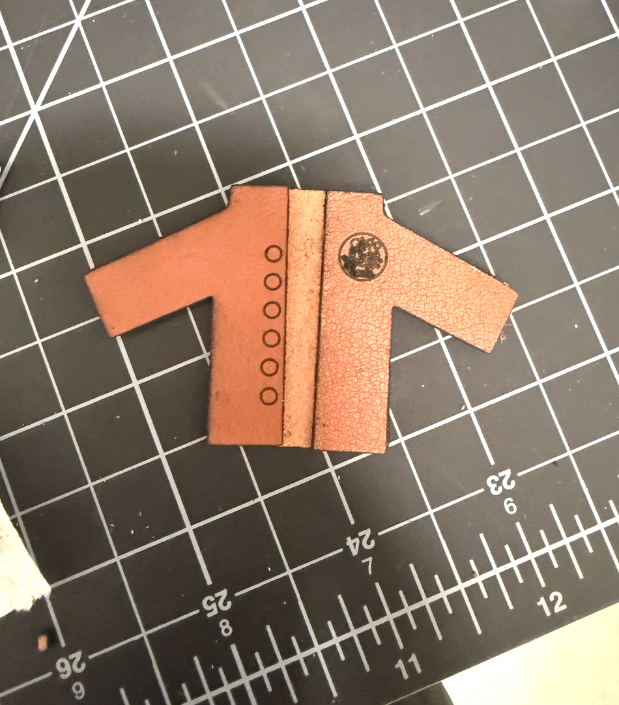
As part of my work with the USC Fabrication Lab, I was requested to make material templates to see the way that materials work best with dofferent raster and vector, laser seting, below are the examples I made for Leather and Acrylic.
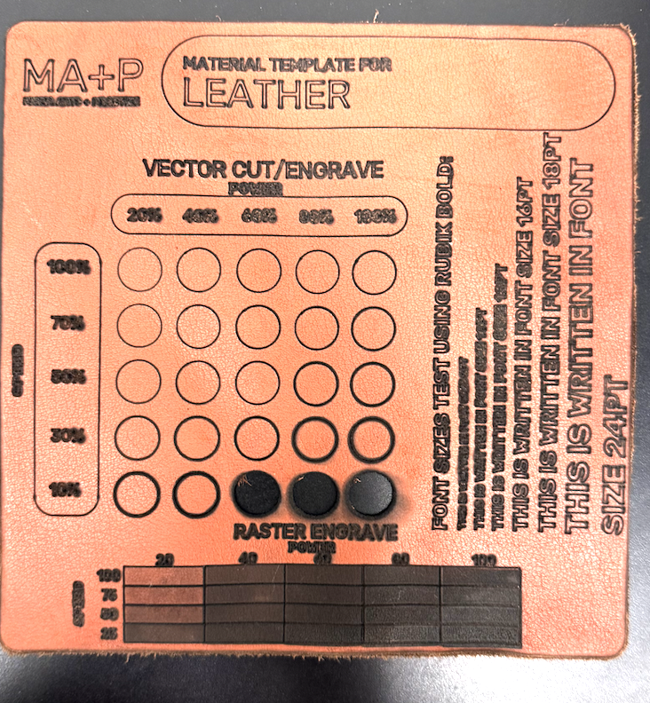
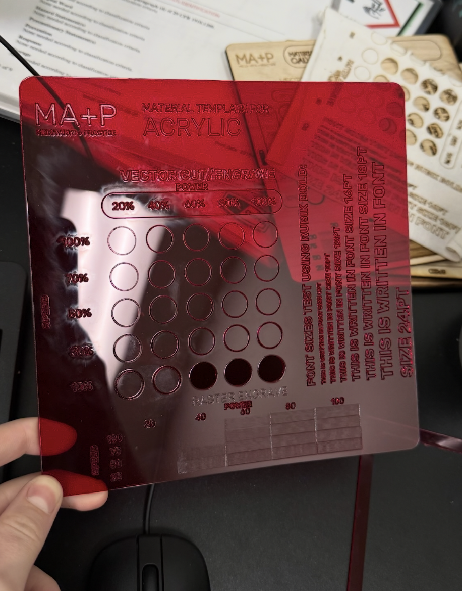
Below is a custom keychain I designed myself and printed with acrylic.

Some tokens I created to sell at an upcoming local art market.
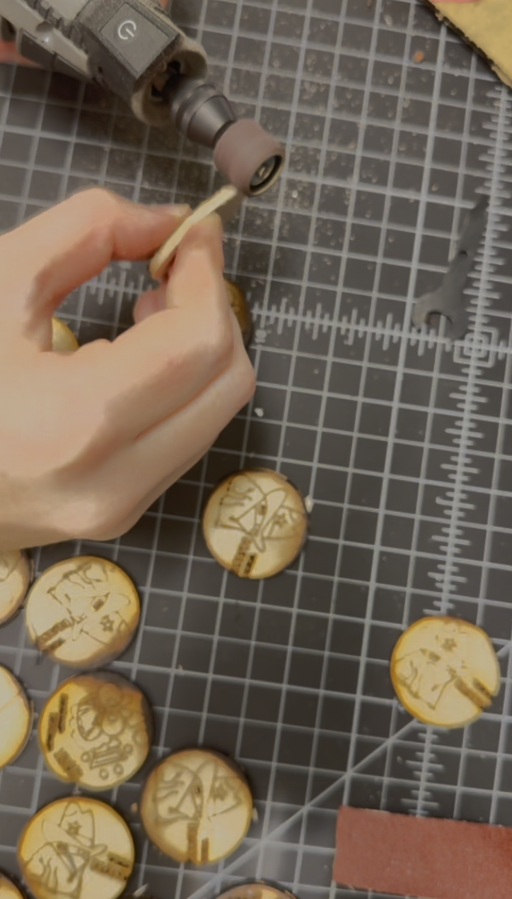
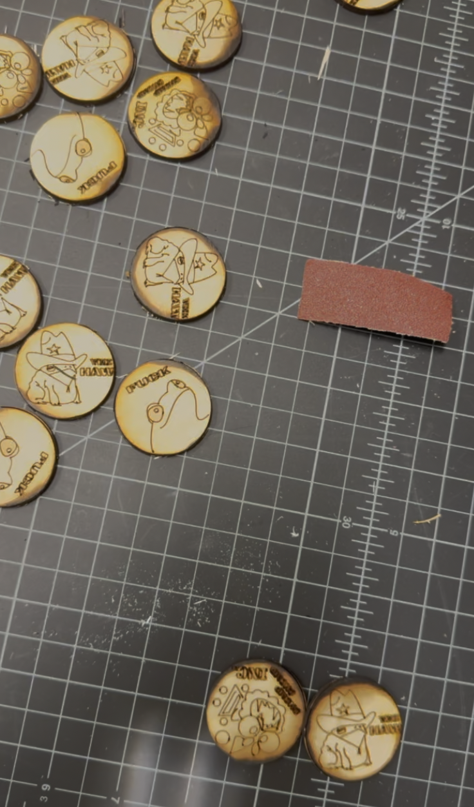
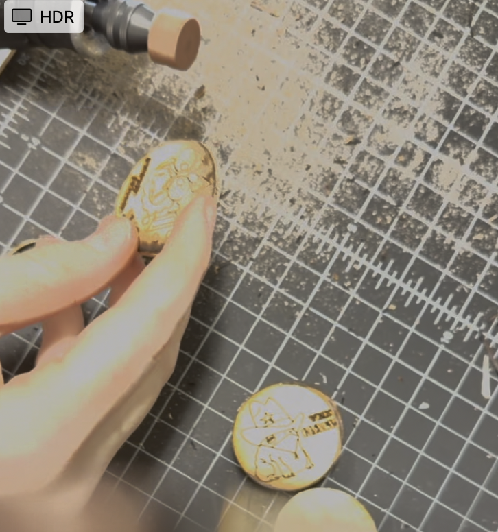
Here are two frames that I made as presents for my sister and Dad, I designed and Laser Cut each one.
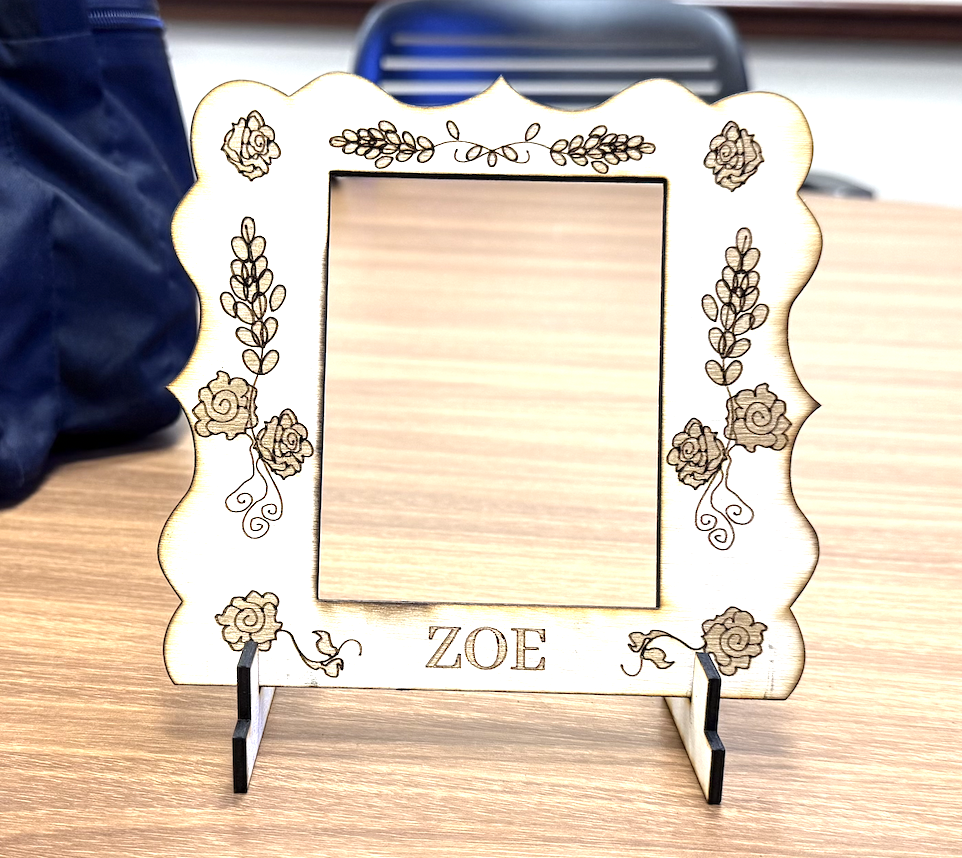
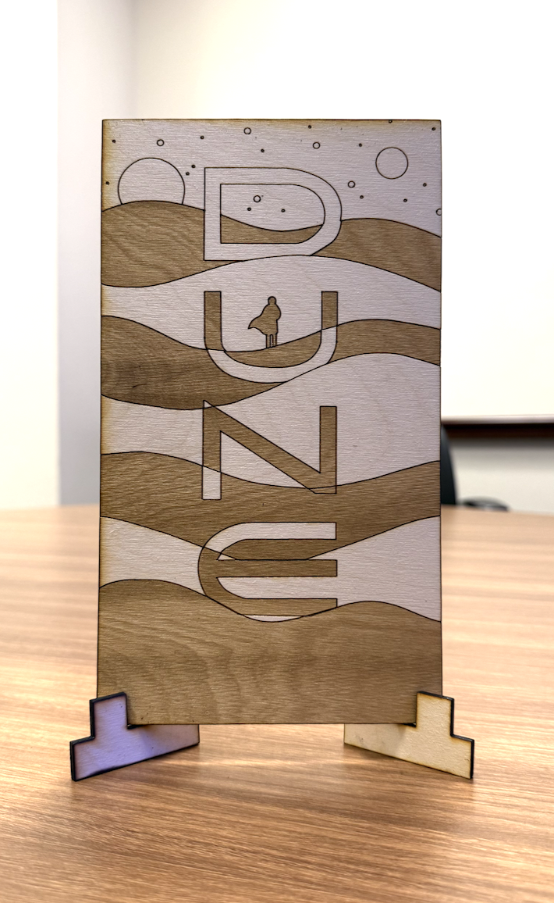
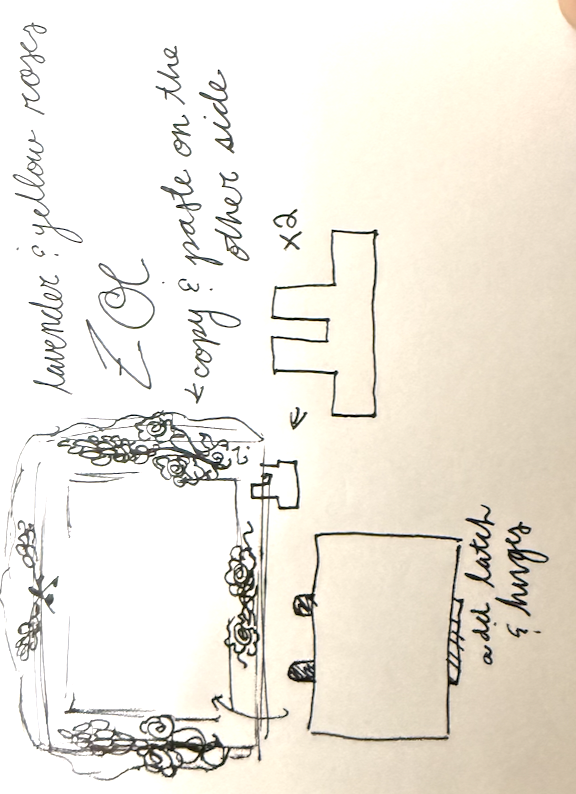
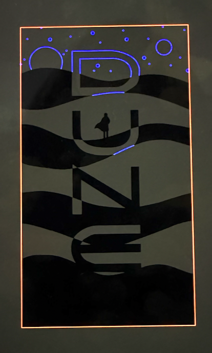
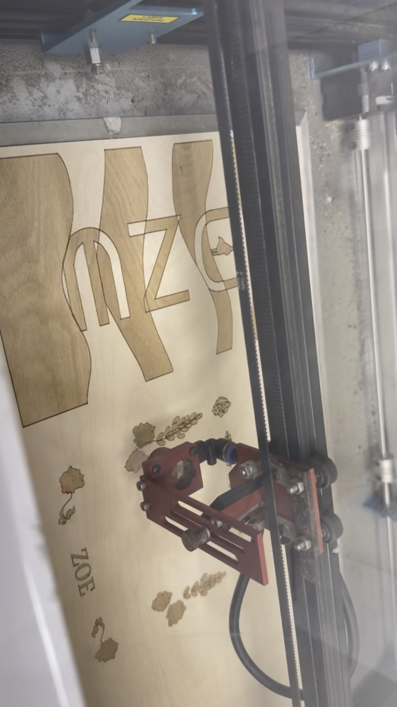
This is one of my first projects on the Laser Cutter. I designed a series of Phonecian boat tokens for a project called tokenizing Lebanon.
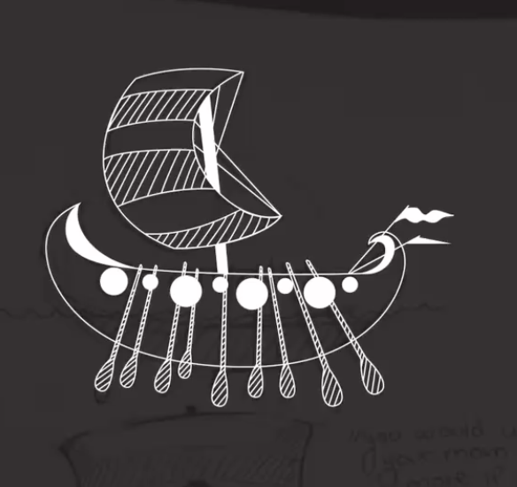
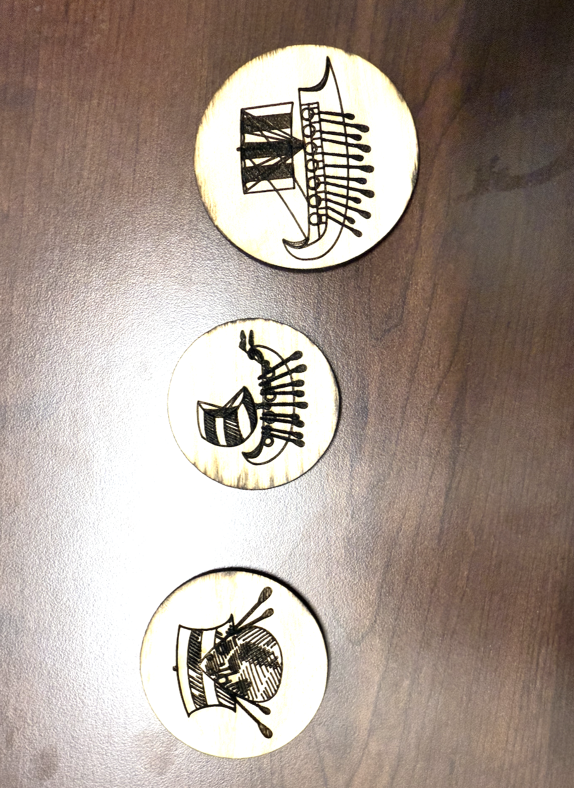